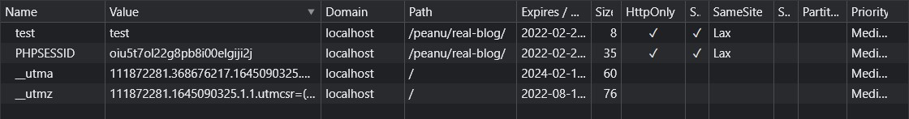

結果還是來填坑了。
簡述
本來是沒打算寫這篇的，但這個攻擊方式對於資安來說似乎還蠻重要的，因此還是來記錄一下好了。
CSRF（Cross Site Request Forgery）跨網站偽造請求。是一種攻擊方式，但要特別注意它和 XSS 是不一樣的東西。這兩個可以單獨使用，也可以合在一起用。
區分 XSS 與 CSRF 的差別
這兩個實際上到底差在哪裡？我是這樣想的：XSS 的欺騙對象是使用者，CSRF 的欺騙對象是伺服器。
XSS 是你到一個你以為安全的網站，但實際上不是，這個網站可能已經被 XSS 注入：
1 | // 駭客想要送到的地方 |
所以駭客就這樣騙走了你（使用者）的 Cookie。
CSRF 是透過「偽造的身分（通常是 session id）」來發出假的 request 給伺服器。例如有個惡意網站：
1 | <img src="http://localhost/peanu/real-blog/handle_admin_delete_post.php?id=92" width="0" height="0" /> |
上面 <img> 的連結是「刪除某篇文章」的 request。
一般來說，刪除文章必須要有管理員的權限，所以 server 會先檢查 session id 是否符合才判斷要不要執行。但是當管理員是在已經登入成功的情況下來到上面的惡意網站呢？
這時候 server 就會以為這個 request 是管理員發的（因為瀏覽器的機制是只要到了某個網域，就會自動帶上 cookie，而 cookie 存的就是 session id），所以就真的把文章刪除了。
所以這就是這兩個最大的差異，我覺得啦。
實際示範 CSRF
這邊拿我做的部落格來實驗，假設有個惡意網站內容長這樣：
1 | // 刪除文章的連結 |
結果就會像這樣：

簡單解釋一下流程：
- 使用者處於登入狀態
- 打開惡意網站
- 惡意網站利用 GET 發請求到
handle_admin_delete_post.php?id=96刪除 id=96 的文章。
這就是 CSRF 可怕的地方（Cross Site），你可以在別的地方對 server 發出 request，而 server 還真的會乖乖照你說的做。
這裡之所以能用 <img> 或 <a> 來發 request 是因為刪除文章用的是 GET。但如果改成 POST 呢？
這邊直接節錄 讓我們來談談 CSRF 的範例。
改成用 Form 表單 POST，這樣就不能用 <img> <a> 來偽造：
1 | <form action="https://small-min.blog.com/delete" method="POST"> |
一樣是 CSRF，但現在頁面會跳轉，使用者會發現怪怪的。
可是駭客非常有想像力，它還是有辦法讓使用者不要察覺：
1 | <!-- 看不到的 iframe --> |
所以我常說當駭客除了要懂程式以外，還要非常有創意，真的太驚喜了。
防範方式
總之呢，CSRF 的攻擊手法還蠻多的，詳細可以參考 讓我們來談談 CSRF，裡面寫的很詳細。
至於要怎麼防範呢？可以先思考一下 CSRF 是怎麼成立的。
CSRF 最大的漏洞在於 server 只檢查 cookie 的 session_id，但沒有檢查 request 是從哪裡發過來的。
所以有幾種做法：
- 檢查 Referer
通常 request header 都會有個 refer 欄位，告訴你 request 是從哪裡發來的。不過這個方法不太靠譜：
- 不是所有瀏覽器都會帶上 refer
- 使用者可能自己關掉 refer 功能（這樣連自己都被擋掉）
- 判斷 refer 的邏輯沒寫好就會 GG
- 圖形驗證碼、簡訊驗證碼
這個做法蠻靠譜的，但問題是使用體驗很差（每次刪文章都要做驗證）
- 加上 CSRF token
大概是像這樣：
1 | <form action="https://small-min.blog.com/delete" method="POST"> |
（sever 自己那邊也要存一個對應的 token）
這樣子就得先知道 token 是 fj1iro2jro12ijoi1 才有辦法通過 server 的驗證，不過問題是如果有開 CROS 的話就會破功：
- 利用管理員的登入狀態發 AJAX 到
admin_post.php取得 token - 在用 AJAX 發 POST 帶上 id 和 token 騙過 server
（不確定寫得對不對，但我猜是這樣）
- 用瀏覽器提供的功能來設定 cookie SameSite（推薦）
簡單來說只要是跨 Domain 的 request 一律擋掉。在 PHP 可以這樣設定：
1 | // 設定 session 的部分 |
這裡做個補充，如果你要確保 cookie 依照上面來設定，最好是在所有會用到 session_start() 的頁面做相同的設定，才不會出現漏網之魚。（或也能拆出來寫成一個 session.php 之類的）
這部分我不太知道怎麼實作，所以只貼設定好的圖片給你看：

至於 samesite 有兩個設定值：
Strict在 Domain 範圍內的 request 才帶上 cookie（要貼登入狀態的東西給別人時不方便）Lax比較寬鬆一點， GET 會帶 cookie，但其他像 POST, PUT, DELETE 就不帶（但這樣就擋不了 GET 的 CSRF）
以上。雖然還沒完全弄懂，但就先這樣子吧。